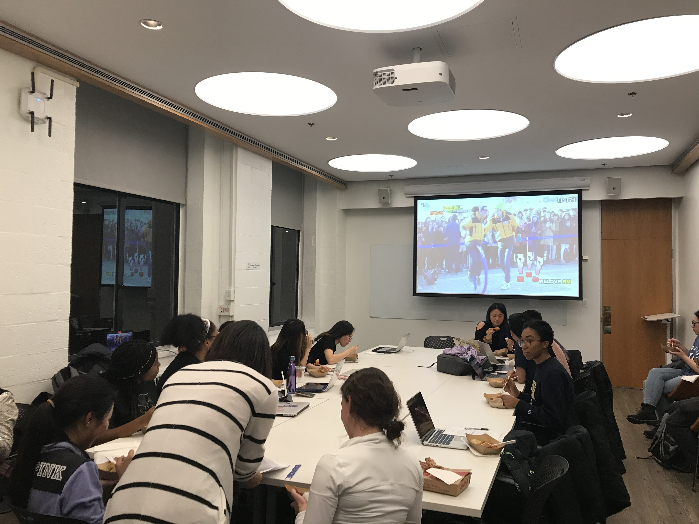
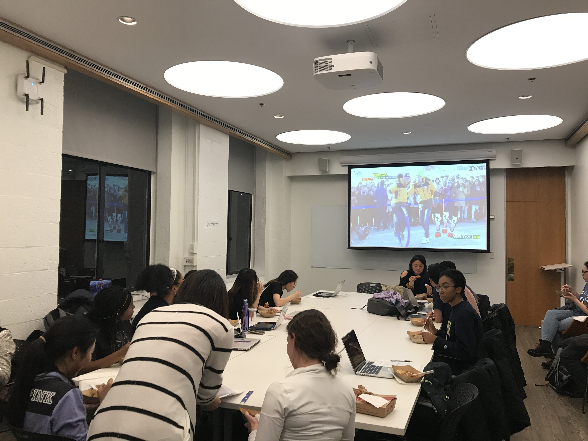
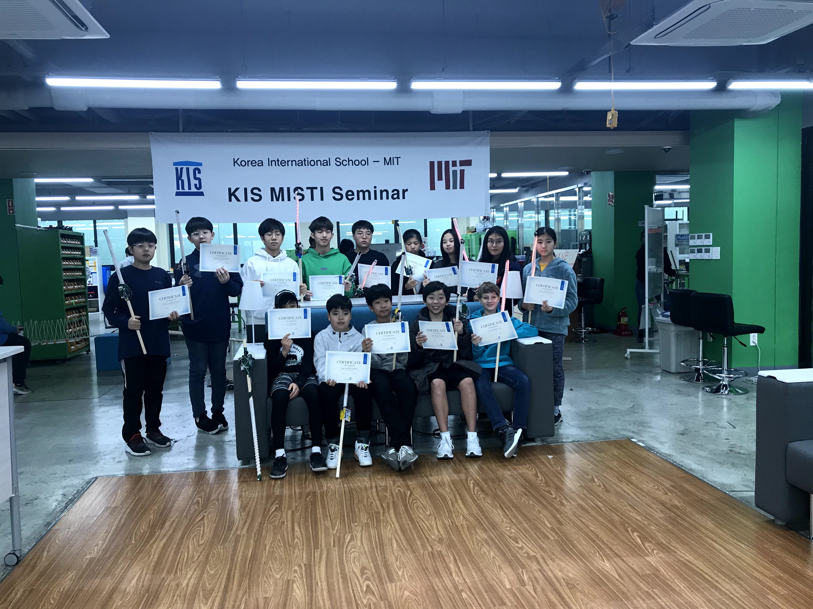
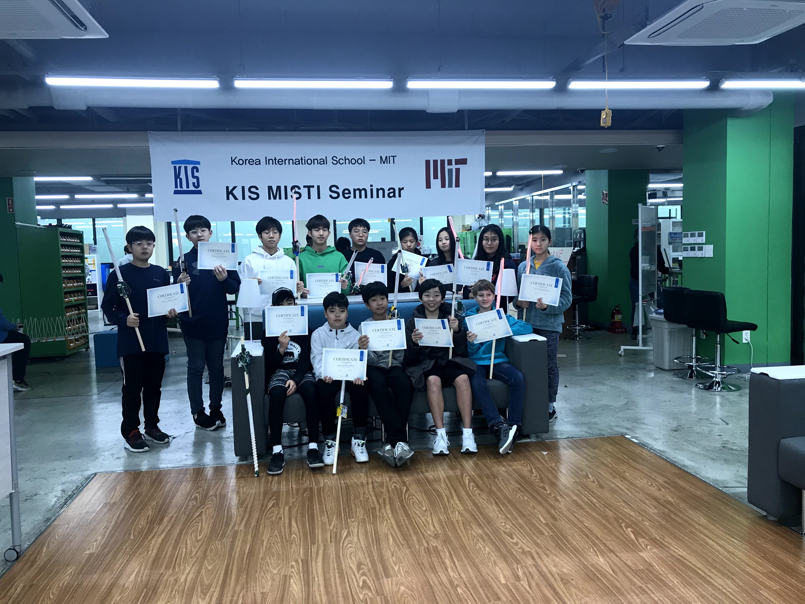

Co-President/Co-Founder
September 2019 - May 2020 || Cambridge, MA
Korean Cultural Association
- Led a club with other 6 executive members to manage events that spread the knowledge of Korean culture within MIT community.
- Revitalized and rebranded Korean Student Association (KSA) to promote inclusivity for MIT students with different background and heritage who are interested in Korean culture.
- Managed the logistics of 3 events, one of which had attendance of over 100 people; logistics included reserving the spaces, contacting sponsors, and purchasing products needed for the event.

 

 
